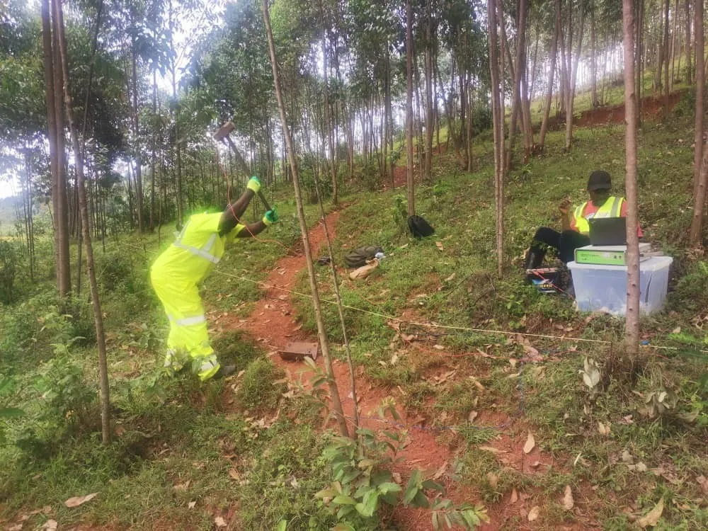
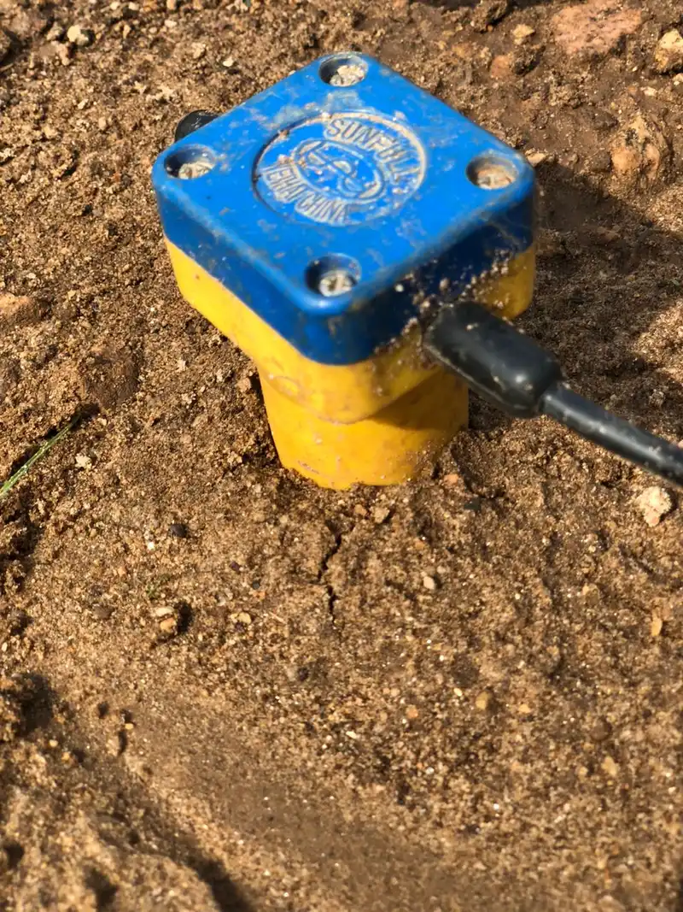
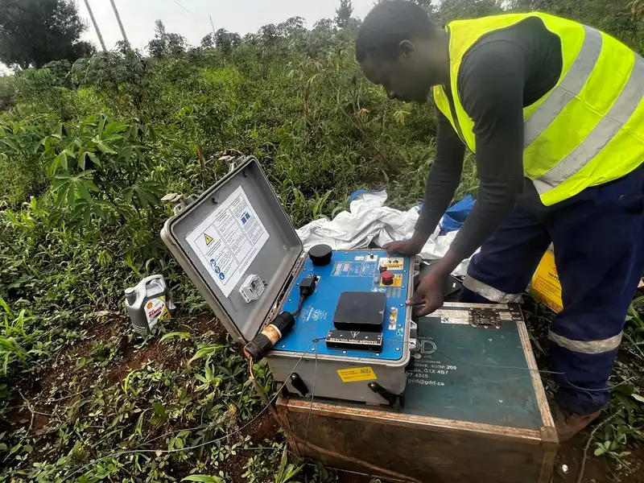

Investigations de sous-sol pour l'hydrowélectricité, les hôpitaux, les mines et les infrastructures à travers le Rwanda — livrées par une équipe géoscientifique francophone.
Le Rwanda se situe sur la branche occidentale (albertine) de la vallée du Rift est-africain. Ses hautes terres sont formées d'un socle précambrien — métasédiments, gneiss et granites — traversé par des complexes intrusifs et des ceintures de pegmatites, avec des sédiments de rift dans les basses terres occidentales autour du lac Kivu. Le terrain y est profondément altéré et pentu, si bien qu'une véritable investigation de sous-sol est indispensable avant barrages, routes, hôpitaux ou travaux miniers.
GeoResolve combine la géophysique non invasive et le forage ciblé pour réduire les risques et les coûts. Pour les barrages, nous cartographions l'axe et les culées par sismique de réfraction et MASW (vitesse des ondes de cisaillement, Vs30), localisons les fuites et zones altérées par ERT, et confirmons le bedrock par des forages et des SPT. Pour les bâtiments, nous livrons la classification sismique du site ; pour les mines, nous déployons magnétique, EM et ERT sur les ceintures de pegmatites.

GeoResolve a réalisé le profilage de vitesse des ondes de cisaillement par MASW sur le site de l'Hôpital King Faisal au Rwanda, livrant la classification sismique du site Vs30 et les propriétés dynamiques des sols pour appuyer la conception des fondations.

Investigations d'axe et de fondation de barrages pour l'hydrowélectricité rwandaise — Rweru et Mwogo/Kavili — utilisant sismique, ERT et forage pour caractériser les culées, l'altération et le bedrock en vue du traitement et du coulis de consolidation.
Tomographie de résistivité électrique sur les corridors de pegmatites pour cibler les minéralisations d'étain, tantale, tungstène et lithium typiques du couloir rwandais.

Nous proposons la sismique de réfraction et la tomographie, le MASW, la tomographie de résistivité électrique (ERT), les levés magnétiques, le géoradar (GPR), le forage avec SPT et les études d'eaux souterraines (VES/ERT) — généralement combinés pour un modèle de sous-sol robuste.
Oui. Nous avons réalisé des investigations d'axe et de fondation de barrages pour l'hydrowélectricité rwandaise, notamment les barrages de Rweru et de Mwogo/Kavili, en utilisant sismique, ERT et forage pour caractériser les culées et le bedrock.
Oui. Nous avons réalisé le profilage de vitesse des ondes de cisaillement par MASW sur le site de l'Hôpital King Faisal au Rwanda, livrant la classification Vs30 et les propriétés dynamiques des sols pour la conception des fondations.
Oui. Nous réalisons des levés magnétiques, EM, IP et ERT, la cartographie géologique et la gestion de forages sur les ceintures de pegmatites rwandaises pour l'étain, le tantale, le tungstène et le lithium.
Oui. Notre équipe est-africaine travaille en français et en anglais et peut livrer sections interprétées, modèles 2D/3D et rapports complets dans l'une ou l'autre langue pour les clients rwandais.
Contactez notre équipe francophone pour un périmètre et un devis — en français ou en anglais.